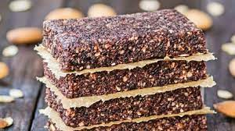
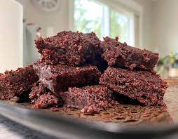

Pemmican


Description
An energy dense, ancient food that provides fats, protein and can last on the shelf for decades. Pemmican doesn't need to be refrigerated. As long as it's stored in a cool, dry place it can last for a very long time. Definitely one of the best foods to have stockpiled if you fear the collapse of society.
Ingredients
- Lean meat (beef is most common, though most meats can be used)
- Animal fat (beef is most common, though most fats except pork can be used)
Optional Ingredients
Steps
- Mince, shred or slice meat thinly to prepare for drying.
- Dry meat using dehydrator or placing is a dry warm place.
- Turn the fat into tallow by rendering fat over heat.
- Mix the ingredients well.
- Spread mixture out to create a layer 1-2 inches thick.
- Allow the Pemmican to solidify.
- Cut Pemmican into desired shape.